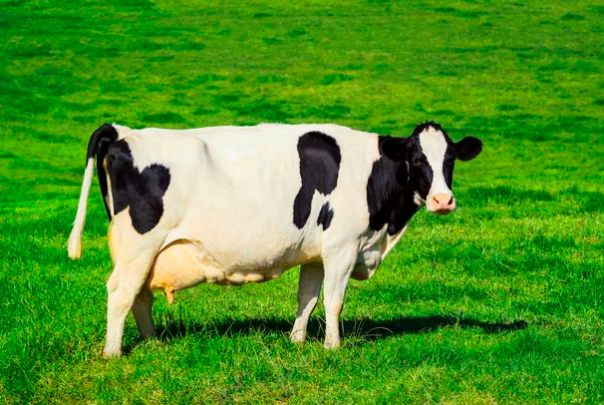

Our Cow Farm
Our cow farms are special. Different kinds of cows give different kinds of milk!!! You want chocolate milk? It comes from a chocolate cow! Amazing~
They all eat whatever kind of milk they make. Strawberry cows eat lots of strawberries and make strawberry milk. So easy!
